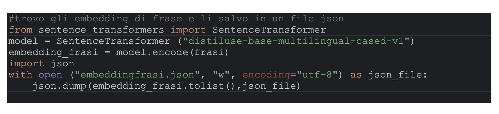

Per calcolare gli embedding delle frasi ho utilizzato, anche in questo caso, la libreria sentence_transformers e il modello "distiluse-base-multilingual-cased-v1". Questo modello trasforma ogni frase in un vettore numerico che ne rappresenta il significato.
Tutti gli embedding ottenuti sono stati salvati in un file JSON, così da poterli riutilizzare senza doverli ricreare ogni volta. Ho evitato di stampare le frasi durante l’esecuzione, perché essendo molte avrebbero rallentato la verifica del programma.